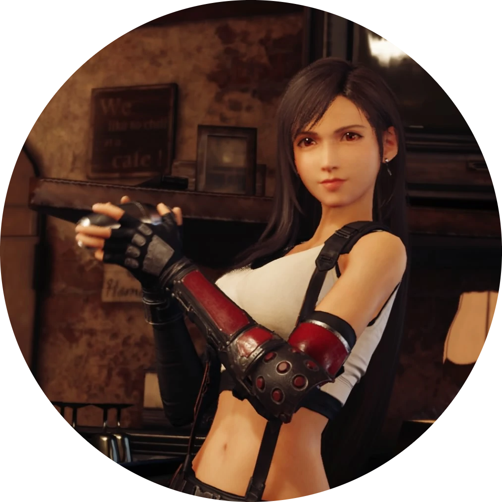
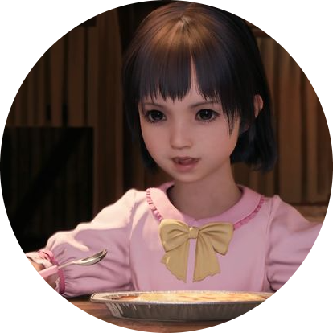
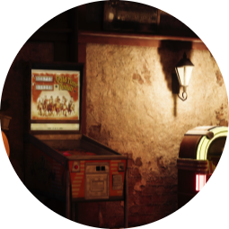

Welcome to Seventh Heaven. A bar located in the Sector 7 slum.
A favourite afterwork hangout for laborers. Tifa's cocktails and cooking are BIG hits among the locals. After hours ,though,
the place functions as a hideout for the anti-Shinra group Avalanche... Oh crap! I shouldn't have said that it functions as a hideout...
Oh crap! I shouldn't have said that the group is anti-Shinra... Oh crap! I definitely shouldn't have said the groups name is Avalanche... Ahh! Its too hot today.
Tifa Lockheart

Born May 3rd 1987, Tifa Lockheart is Seventh Heavens leading lady.
Just give her a big tip and she'll happily pull you....a pint!
Marlene Wallace

After losing her mother to illness and her dad to suicide, Marlene was adopted by her dads best friend Barrett Wallace,
who within months helped her to turn tragedy into triumph by assissting her in becoming Sector 7's youngest ever barmaid, at just
4 years old.
The Pinball Machine

A mild mannered Pinball Machine by day, a secret hideout entrance guarder by nig...Wait! What?